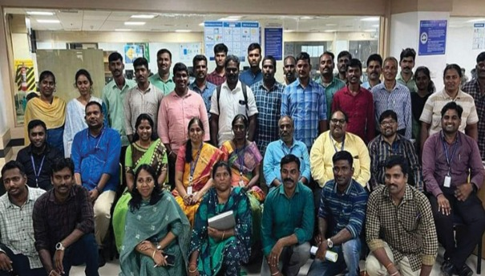

Cyber Security is a rapidly evolving specialization that safeguards digital assets, networks, and
infrastructures from malicious activities. Programs offered under this specialization include:
• B.Tech: Computer Science & Engineering with Cyber Security.
• M.Tech: Cyber Security, Information Security and Cyber Forensics.
• Integrated M.Tech: Cyber Security & Digital Forensics.
• Minor Specialization: Cyber Security.
The specialization bridges the gap between theoretical learning and practical applications by
integrating cutting-edge technologies and industry-sponsored labs. Students gain expertise in
vulnerability assessment, malware analysis, digital forensics, and identity management
Professor, NWC, SRMIST.
Associate Professor, NWC, SRMIST.
Associate Professor, NWC, SRMIST.
Associate Professor, NWC, SRMIST.
Associate Professor, NWC, SRMIST.
Associate Professor, NWC, SRMIST.
Associate Professor, NWC, SRMIST.
Associate Professor, NWC, SRMIST.
Associate Professor, NWC, SRMIST.
Assistant Professor, NWC, SRMIST.
Assistant Professor, NWC, SRMIST.
Assistant Professor, NWC, SRMIST.
Assistant Professor, NWC, SRMIST.
Assistant Professor, NWC, SRMIST.
Assistant Professor, NWC, SRMIST.
Assistant Professor, NWC, SRMIST.
Assistant Professor, NWC, SRMIST.
The Cyber Security specialization labs aim to equip students and researchers with the necessary tools and skills to address advanced challenges in digital security, malware analysis, and cyber forensics. These labs foster innovation, hands-on learning, and collaboration with industry leaders, enhancing readiness for real-world cyber threats.
Focuses on digital investigations, electronic evidence analysis, and cybercrime resolutions to support law enforcement and forensic professionals.
Conducted workshops and training sessions on digital evidence handling, forensic investigation techniques, and expert testimony practices.
Strengthens digital infrastructure resilience by equipping users with advanced tools for endpoint protection, identity management, and vulnerability assessment.
Hosted training programs on protecting critical infrastructure and mitigating sophisticated cyber threats, focusing on enterprise security frameworks and cyber risk management.
Empowers researchers to analyze malicious software, understand cyber threats, and develop countermeasures for enhanced security.
Engaged in research projects on sandboxing techniques, zero-day malware detection, and behavioral threat intelligence.
Provides industry-relevant training for Red Hat Global Certification, fostering expertise in Linux system administration and open-source technologies.
18 batches of certified students successfully trained.
Conducted FDPs on open-source tools and enterprise Linux solutions.
32 systems upgraded with RHEL V9 software worth Rs.5 lakhs.
Organized faculty training sessions and student certification programs for Red Hat certification exams.
The MoUs related to Cybersecurity, were signed with Wise Work Innovations Pvt. Ltd. (2022), Cyberfort (2022), Consortium for Technical Education (CTE) (2024),and World Wide Women in Cybersecurity (2025). The Wise Work Innovations MoU, spanning three years, facilitated internships for eight students and one faculty member in 2023. The Cyberfort MoU (2022 2027) introduced a 3-credit Cyber Security Operations course, engaging 33 students and teachers. The CTE partnership (2024-2027) focuses on CTE lab setup and training to enhance students’ cybersecurity skills. Lastly, the World Wide Women in Cybersecurity MoU (2025-2027) led to the formation of the W3-CS student chapter, encouraging community building and industry engagement. These collaborations aim to equip students with cybersecurity expertise, hands on training, and career opportunities in the field.